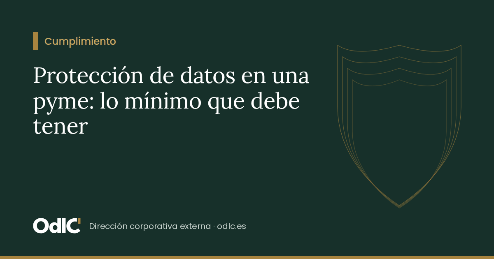

En resumen
- Todas las empresas tratan datos personales, aunque solo sean de empleados y clientes.
- Lo básico: registro de actividades, información, contratos con proveedores y seguridad.
- Una brecha de seguridad se notifica a la AEPD en 72 horas si supone un riesgo.
La protección de datos suele verse como un trámite de cláusulas en el pie del correo. Pero el RGPD exige poder demostrar que se cumple, y eso significa tener ciertos documentos y procesos.
Los proveedores, el punto débil
Cuando la gestoría hace las nóminas o el informático accede a los equipos, tratan datos por cuenta de la empresa. El RGPD exige un contrato que regule ese encargo (artículo 28). Es uno de los documentos que más falta en las pymes.
Si algo sale mal
Un correo enviado a quien no debía, un portátil robado o un ataque informático pueden ser una brecha de seguridad. Si supone un riesgo para las personas, hay que notificarla a la Agencia Española de Protección de Datos en 72 horas (artículo 33 del RGPD). Tener el procedimiento escrito antes evita improvisar.
Si prefiere que alguien lo lleve por usted, el orden continuo se ocupa de ello. Y la calculadora le muestra cuánto le cuesta hacerlo por su cuenta.
¿Quiere revisar este tema en su empresa o su patrimonio? Lo revisamos con usted en una sesión de 30 minutos sin coste.
Reservar sesiónFundadora de ODLC. 25 años construyendo y dirigiendo la estructura corporativa de un grupo de inversión inmobiliaria y el patrimonio de su propiedad. Graduada en Derecho con el Máster de Acceso a la Abogacía. Ayuda a pymes, familias e inversores a poner en marcha y mantener en orden sus sociedades.
Quiénes somos · Reservar una sesiónEsto llega cada viernes en «Empresas y Patrimonios en Orden»
La newsletter de ODLC: corporate, cumplimiento, puesta en marcha y family office, una cuestión práctica cada semana.